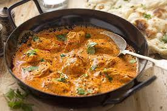
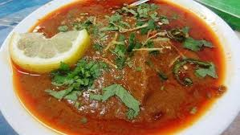

Biryani is a delicious rice dish peppered with scrumptious spices like saffron and cumin and further layered with spiced meat or veggie protein. Typically, this layered rice dish is enriched with added yogurt or ghee, a clarified butter, for an extra boost of luxurious flavor.

Curry is a recipe that originated from the Indian subcontinent, and generally consists of an eclectic medley of native spices, herbs, and veggies. The most common curry ingredients may include cumin, coriander, turmeric, ginger, garlic, onions, chili peppers, and tomatoes.

Nihari is a rich, slow-cooked meat stew flavored with spices and thickened with atta, or Pakistani & Indian-style durum whole wheat flour. Pakistani versions of Nihari are typically made with beef, but Nihari can be made with lamb, goat meat, or chicken.